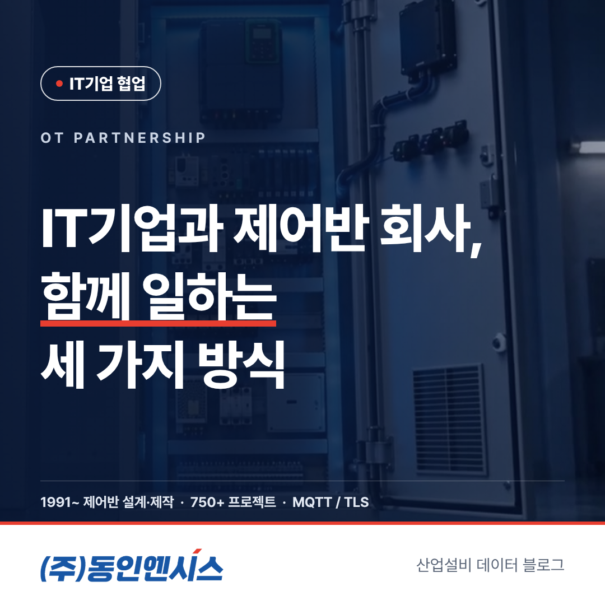
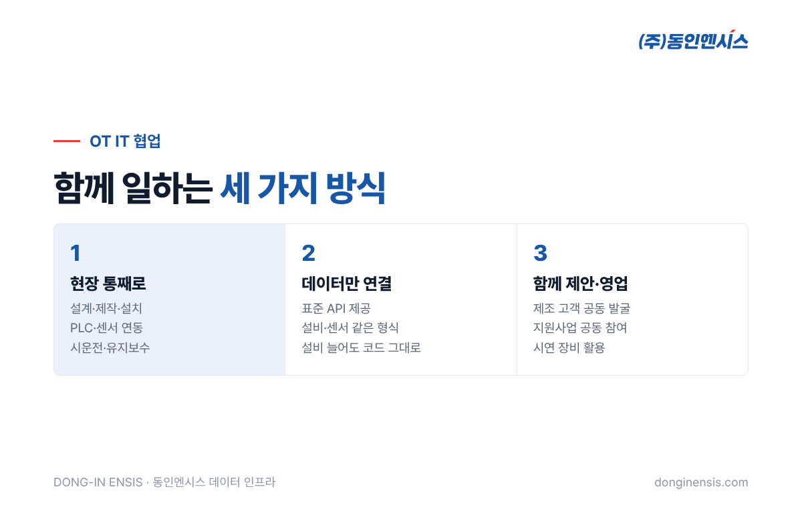
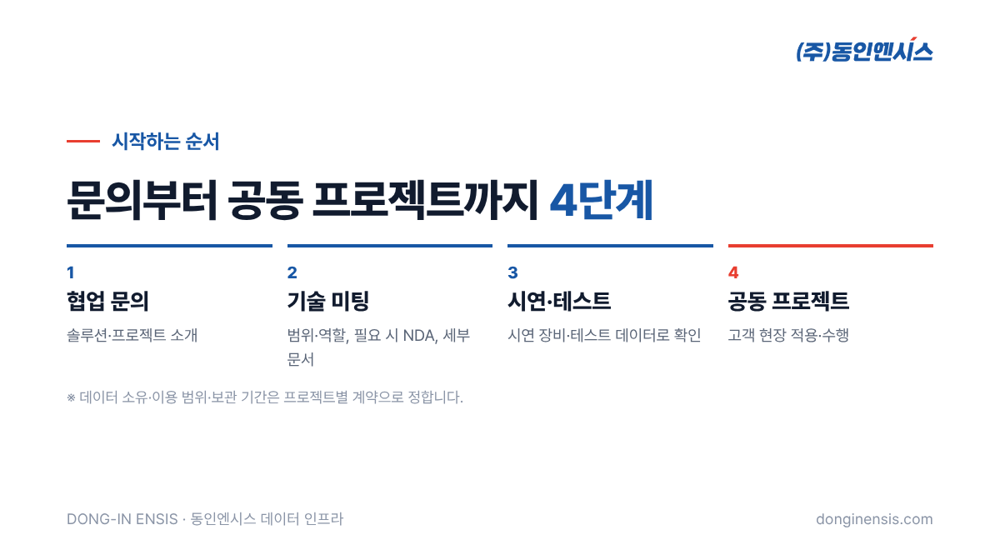

MES, 제조 AI, 디지털트윈을 만드는 IT기업과 현장 설비를 다루는 제어반 회사는 서로가 꼭 필요하지만, 막상 같이 일하려면 "어디까지 누가 맡지?"부터 정해야 합니다. 이 글에서는 산업 현장의 제어반을 35년 가까이 설계·제작해 온 동인엔시스가 IT기업과 함께 일하는 OT IT 협업 방식을 세 가지로 나눠, 각각 어떤 프로젝트에 잘 맞는지 비교했습니다. 처음 OT 파트너를 찾는 IT기업 담당자분께 지도 같은 글이 되면 좋겠습니다.
OT는 공장 설비를 실제로 움직이는 운영 기술, IT는 데이터를 저장하고 분석하는 정보 기술을 말합니다. 둘은 쓰는 언어부터 다릅니다. OT 쪽은 PLC, 인버터, 인터록, 시운전을 이야기하고, IT 쪽은 API, 데이터베이스, 클라우드, 모델 학습을 이야기합니다.
문제는 프로젝트가 두 세계의 경계에서 자주 멈춘다는 점입니다. 플랫폼은 준비됐는데 현장 PLC 기종이 제각각이라 연결이 안 되거나, 데이터는 들어오는데 형식이 현장마다 달라 쓸 수가 없거나, 수집 장비를 관리할 사람이 없어 몇 달 뒤 데이터가 끊기는 식입니다. 이 경계를 누가, 어떻게 맡을지 미리 정하는 것이 협업의 시작입니다.

제어반 설계·제작·설치부터 PLC·인버터·센서 연동, 시운전과 이후 유지보수까지 현장 쪽 일을 동인엔시스가 전부 맡는 방식입니다. IT기업은 현장에 사람을 보내지 않고도 정리된 데이터를 받아 플랫폼 개발과 고객 서비스에 집중할 수 있습니다.
이미 현장 쪽 파트너가 있거나 고객사가 설비 구성을 정해 둔 경우, 동인엔시스는 표준 API로 설비 데이터를 넘겨주는 역할에 집중합니다. 설비마다 현장 번호와 설비 번호를 붙이고, 센서마다 값·단위·상태를 같은 형식으로 담아 보내기 때문에 설비가 늘어나도 받는 쪽 코드를 새로 짤 필요가 없습니다.
제조 고객을 함께 찾고, 정부 지원사업에 함께 참여하고, 시연 장비를 들고 함께 제안하러 가는 방식입니다. 현장 제어 경험과 소프트웨어 역량을 한 팀으로 보여 줄 수 있어 고객 입장에서도 맡길 곳이 분명해집니다. 동인엔시스는 2026년 10월 스마트공장 공급기업으로 등록해 지원사업 쪽 준비도 함께할 수 있습니다.
Photorealistic photo of a bright modern meeting room in Korea: two software developers in casual shirts with laptops and two control engineers in navy work jackets sit around a table reviewing a printed system architecture diagram (no readable text) and a small control panel demo unit on the table, whiteboard in background with abstract boxes and arrows, natural light, faces softly focused, no brand logos, no readable text. 3:2 landscape.
| 비교 항목 | 현장 통째로 | 데이터만 연결 | 함께 제안·영업 |
|---|---|---|---|
| 동인엔시스 역할 | 설계·제작·설치·연동·유지보수 | 표준 API로 데이터 제공 | 공동 발굴·제안·지원사업 |
| IT기업 역할 | 플랫폼·서비스 | 플랫폼·서비스 + 현장 조율 | 플랫폼·서비스 + 공동 영업 |
| 시작 속도 | 제어반 제작 기간 필요 | 비교적 빠름 | 고객 확보에 따라 다름 |
| 잘 맞는 기업 | 현장 경험이 적은 곳 | 플랫폼이 이미 있는 곳 | 고객 발굴이 필요한 곳 |
실제로는 한 가지만 고르기보다 섞어 쓰는 경우가 많습니다. 첫 프로젝트는 함께 제안해서 따고, 현장은 통째로 맡기고, 다음 현장부터는 데이터만 연결받는 식입니다.
어떤 방식이든 시작하는 길은 같습니다.

협업이 오래가려면 기술보다 먼저 합의할 것이 있습니다.
Photorealistic photo of a compact demonstration test bench in a Korean engineering office: a small open control cabinet with a PLC and a variable frequency drive wired to a small electric motor on a bench, a laptop beside it showing abstract data charts (unreadable), neatly organized cables, warm office lighting, no people, no brand logos, no readable text. 3:2 landscape.
여러 프로젝트를 거치며 보니, 순조롭게 끝나는 OT IT 협업에는 몇 가지 공통점이 있었습니다.
결국 OT IT 협업은 기술보다 소통의 문제인 경우가 많습니다. 처음 몇 주를 어떻게 보내느냐가 프로젝트 전체를 좌우합니다.
Q. 작은 스타트업도 협업할 수 있나요? 네. 규모보다 프로젝트의 방향이 맞는지가 중요합니다. 시연·테스트 단계부터 가볍게 시작해 볼 수 있습니다.
Q. 특정 PLC 제조사만 연결되나요? 새로 구성하는 지능형 제어반은 저희가 설계하고, 기존 현장의 다른 회사 PLC는 읽기 전용으로 연결 방법을 찾습니다. 슈나이더 일렉트릭 공식 SI 파트너로서 쌓은 제어 경험이 바탕이 됩니다.
Q. 해외 현장도 가능한가요? 동인엔시스는 7개 나라의 생산라인 제어와 미국 전기차 공장 제어시스템에 참여한 경험이 있습니다. 해외 프로젝트는 현장 여건을 보고 함께 검토합니다.
OT IT 협업은 누가 더 잘하느냐가 아니라, 서로 잘하는 일에 집중하도록 경계를 나누는 일입니다. 동인엔시스는 750건이 넘는 프로젝트에서 쌓은 현장 경험으로 그 경계의 현장 쪽을 맡겠습니다.
함께 해 볼 프로젝트가 있다면 홈페이지 IT기업 협업 페이지에 편하게 남겨 주세요.
파트너십 문의 051-862-3668 | dongin@donginmne.com
아래 질문 중 하나에 실제 경험으로 답해 본문 적당한 곳에 넣어 주세요. 사람이 직접 쓴 문장이 들어가면 네이버에서 저품질 위험이 줄고 노출에 도움이 됩니다.